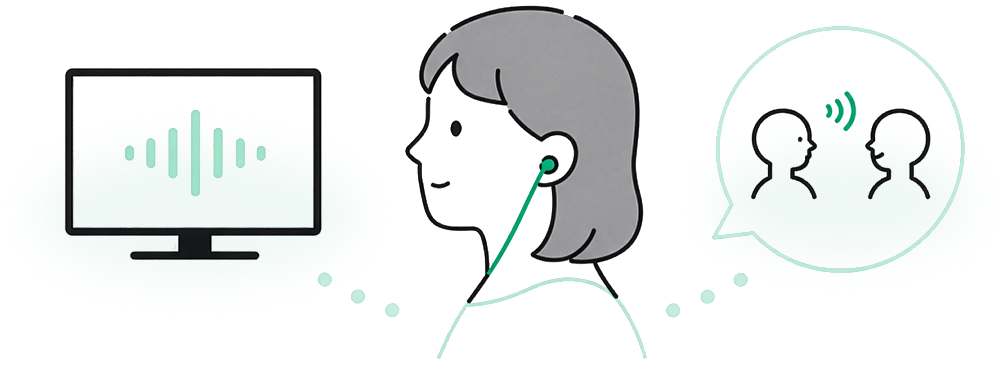

会話の聞こえに
特化した設計
余計な操作を省き、開いてすぐ集音を始められるシンプル設計です。
普段のイヤフォンで使える、会話の聞こえサポートアプリ。近くの人との会話に特化したシンプルな機能で、日々のコミュニケーションをもっと心地よく。
mimi+ をはじめる iPhone 対応・医療機器ではありません近くの人との会話の聞こえをサポートし、日常のコミュニケーションを快適に。
聞こえ方を整えることで、会話への集中をサポートします。
聞こえ方やノイズ軽減を、自分に合わせて調整できます。
余計な操作を省き、開いてすぐ集音を始められるシンプル設計です。
有線・AirPods・Bluetooth などの接続状態に合わせて動作します。
無料で1日20分まで。必要に応じて Premium を選べます。
医療機器の代わりではなく、日常の会話をサポートするアプリです。はじめにご利用案内を確認してから使い始められます。
白を基調に、やわらかなミントグリーン。文字の大きさや余白にもこだわり、使う人に寄り添うデザインを目指しました。

情報を絞り、長く見ても疲れにくいシンプルな画面です。
余白と行間をゆったりとり、落ち着いた体験を提供します。
大きなタップ領域と分かりやすい配置で、迷わず操作できます。
普段使っているイヤフォンを接続して、聞こえを助けたい場面でアプリを開きます。
ホーム画面の大きなボタンをタップすると、すぐに集音を始められます。
音量・聞こえ方・ノイズ軽減・左右バランスを、自分に合わせて調整できます。はじめての方は聞こえチェックでおすすめ設定もそろえられます。
本アプリは音声や会話内容を録音・保存・外部送信しません。日常生活の聞こえを一時的にサポートするためのアプリです。
録音・保存は
行いません
音声は端末内で
処理します
広告やトラッキングに
使いません
医療機器ではありません。診断・治療・聴力改善を目的としたものではありません。
使い方や不具合など、お困りの際はサポートページをご利用ください。
サポートを見るプライバシーの考え方や、データの取り扱いについて。
プライバシーポリシーよくあるご質問や、アプリの最新情報はこちら。
詳細ページを見る